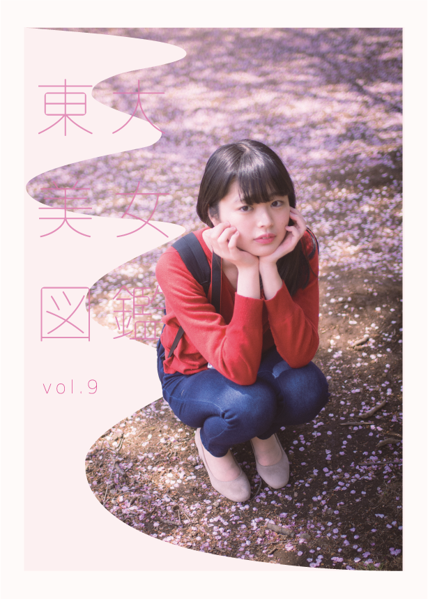
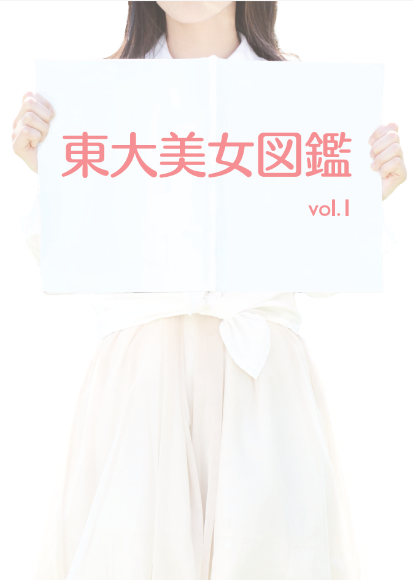

<!DOCTYPE html>
<html lang="ja">
<head>
  <meta charset="UTF-8">
  <meta name="viewport" content="width=device-width, initial-scale=1.0">
  <meta http-equiv="X-UA-Compatible" content="ie=edge">
  <link rel="stylesheet" href="stylesheet.css">
  <title>about東大美女図鑑</title>
</head>
<body>
  <div class="header">
    <div class="container">
      <div class="logo">
        
      </div>
    </div>
  </div>
  <div class="menu-wrapper">
    <div class="container">
      <!--メニューリンク＊５-->
      <a href="#" class="link" id="one">トップページ</a>
      <a href="#" class="link" id="two">東大美女図鑑？</a>
      <a href="#" class="link" id="three">美女紹介</a>
      <a href="#" class="link" id="four">学園祭情報</a>
      <a href="#" class="link right-end" id="five">お問い合わせ</a>
    </div>
  </div>
  <div class="info-wrapper main">
    <div class="container">
      <!-- バナー -->
      
      <div class="banner">
        <div class="banner-1">東大美女図鑑って？</div>
        <div class="banner-2">What is The UT Sweatheart?</div>
      </div>
    </div>
  </div>
  <br>
  <br>
  <div class="copy-wrapper main">
    <div class="copy container">
      <!-- 改行とｆｓ次第でdivわけ -->
      <div class="copy-top">東大の 美女は すごい。</div>
      <br><br>
      <div class="copy-body">東京大学の女の子って、素敵な人が多いらしい。<br>いったい、どんな人たちなんだろう。</div>
      <br>
      <div class="copy-body">知性あふれる、手の届かない存在？<br>それとも世間の女子大生と何も変わらない？</div>
      <br>
      <div class="copy-body">キャンパスを歩く東大美女たちのお話を聞くうちに、<br>彼女たちの深い魅力に気づきました。</div>
      <br>
      <div class="copy-body">一言では言い表せない、彼女たちの「すごさ」を<br>私たちは発信していきます。</div>
      <br>
    </div>
  </div>
  <div class="contents-wrapper main">
    <div class="container">
    <!-- 概要、活動、vol.9, vol.1~8 -->
    <div class="header-box">
      <p class="header-left">概要</p>
      <p class="header-right">東大美女図鑑って？</p>
    </div>
    <div class="text-box">
      <p>「東大美女図鑑」は、「勉強一辺倒で大学生活を楽しんでいない」という従来の東大女性のイメージを打破し、
        東大女性と東京大学のイメージアップを図るために、東大文科一二類26組のクラスメイトを中心とした男女7名によって、
        2013年3月24日に活動を開始しました。「東大美女図鑑」は、東大女性のイメージ向上に貢献することで、
        女子学生比率がわずか18.2%（2012年現在）である東大の女子受験者数増加を目指しています。<br>
        　2013年は有志企画として活動していましたが、翌2014年には、サークル「STEMS UT」を結成し、
        現在はその一部門である「『東大美女図鑑』編集部」によって運営が行われています。</p>
    </div>
    <div class="header-box">
      <p class="header-left">活動</p>
      <p class="header-right">写真誌『東大美女図鑑』</p>
    </div>
    <div class="text-box">
      <p>『東大美女図鑑』編集部は、知性と美を兼ね備えた「東大美女」たちに撮影・インタビューを行い、
        写真誌『東大美女図鑑』を制作しています。写真誌は毎年5月と11月に行われる東大の学園祭「五月祭」と「駒場祭」で発表しています。<br>
        　モデルの東大美女たちはもちろん、撮影・デザイン・編集・制作のすべてを東大の学生によって行っています。<br>
        　写真誌は、学園祭の時期以外には、東京大学本郷キャンパス・駒場キャンパス構内の書籍部にて販売しているほか、
        インターネットでもお求めいただくことができます。</p>
      <a href="#">▶ 写真誌を購入する</a>
    </div>
    <div class="header-box">
      <p class="header-left">新刊</p>
      <p class="header-right">写真誌『東大美女図鑑 vol. 9』</p>
    </div>
    <div class="text-box">
      <div class="text-left">
        <p>
        2018年5月19日発行<br>第91回五月祭にて発表<br>A4版フルカラー84ページ<br>
          価格：1,500円（税込）<br><br>
          　Vol.9のテーマは、『東大美女図鑑 -ひらく-』。 カメラを意識すると、誰しも少しは表情を作ってしまうもの。
          今回はそんな対外的な一面のみならず、東大美女たちのできるだけ飾らない可愛さや自然な魅力が表れた写真を多く収録しました。
          他にも、カメラ女子旅に出かけたり、夢かわいい世界に迷い込んだりと、新境地の扉を開いた彼女たちの姿も掲載。
          それぞれの東大への思いや日常生活にも迫っています。</p>
          <a href="#">▶ 『東大美女図鑑 vol. 9』を購入する</a>
      </div>
    </div>
    <div class="header-box">
      <p class="header-left">既刊</p>
      <p class="header-right">写真誌『東大美女図鑑 vol. 1』</p>
    </div>
    <div class="text-box">
      <div class="text-left">
        <p>
        2014年5月17日発行<br>第87回五月祭にて発表<br>A4版フルカラー20ページ<br>
          価格：1,000円（税込）<br><br>
          　創刊号のテーマは、「東大美女図鑑、はじまる」。<br>
          　キャンパスを歩く東大美女たちの素顔にはじめて迫りました。<br>
          「かしこいだけじゃない、かわいいだけでもない」。「東大美女」という、
          全く新しい東大女性像は、ここからはじまりました。</p>
        <a href="#">▶ 『東大美女図鑑 vol. 1』を購入する</a>
      </div>
    </div>
    <!-- 省略 -->
    <p>-------------------------------略-------------------------------</p>
    <div class="text-box">
      <a href="#">◀ 「東大美女図鑑」トップページに戻る</a>
    </div>
    </div>
  </div>
  <footer>
    <p>© STEMS UT・『東大美女図鑑』編集部</p>
  </footer>
</body>
</html>
